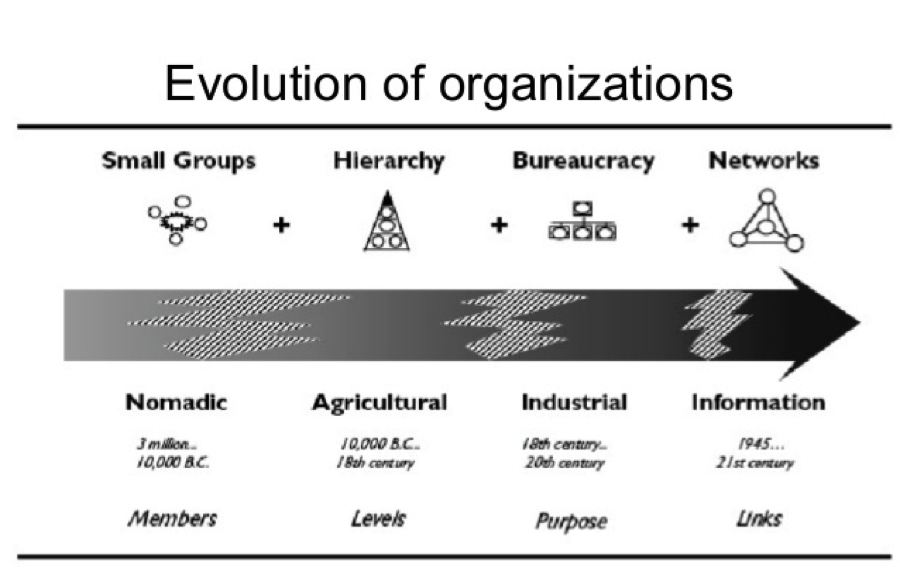
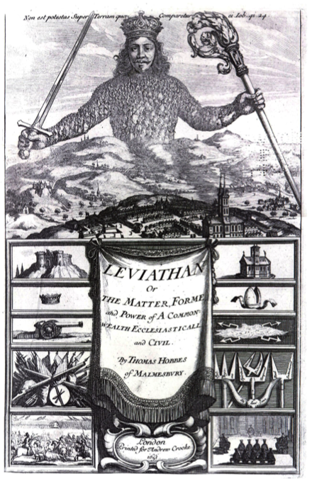
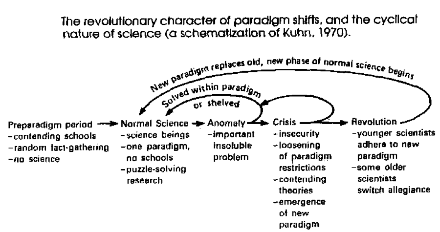
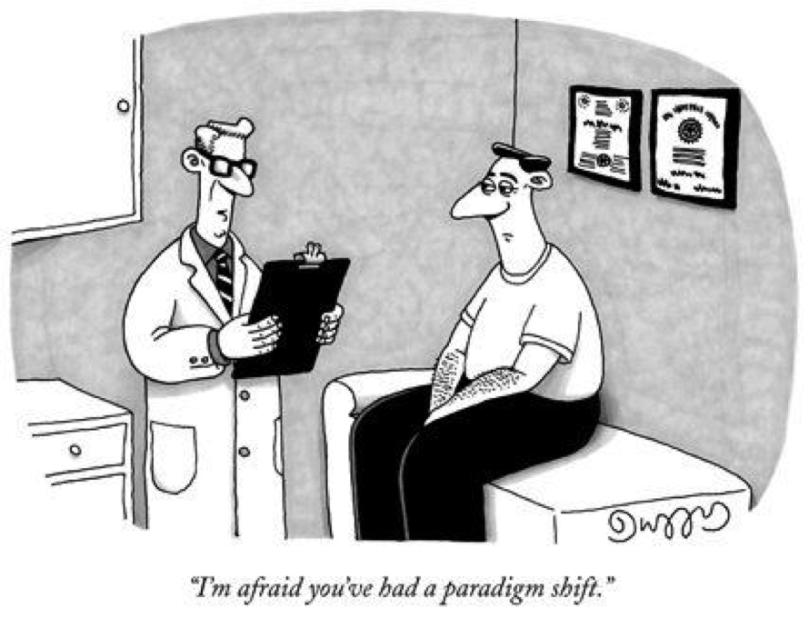

A Quest for Meaning
The evolution of societies is a phenomenon that continues to attract academic attention. From earliest bands of hunter-gatherers to the complex, modern societies of the 21st Century, we have witnessed fundamental shifts in the grouping of people that have profound effects on the power dynamics between them. While scholars will continue to debate and disagree about the mechanisms underpinning this evolution and resulting concentration of power, there are common terms at the heart of the matter that we will discuss for the purposes of our analysis. We will begin by drawing a distinction between the evolutionary and neo-evolutionary perspectives, followed by an examination of the role “types”, as outlined by Norman Yoffee in his “Myths of the Archaic State” (2005). Finally, we will return to the evolutionary model and outline other factors that reinforce the strength of it, including the framework of scientific inquiry, the era and environment in which social scientists work, and the human desire for comprehensive histories.
The Evolutionary Approach
Long held conceptions of evolution, in the traditional sense and in contrast to neo-evolutionism, tend to take on Darwinian attributes. This is a unilinear way of viewing the evolutionary process that restricts any deviation in humanity’s development from bands into states. In this way, the existence of a state is merely a linear progression from bands, to tribes, to chiefdoms, all under a hierarchical authoritative framework. Conversely, neo-evolutionists reject the notion of linear progression in favor of independent deviations of civilizations. At the heart of this view, and in direct contrast with traditional evolution, is a disregard for a deterministic framework; rather, societal progression is a function of free will and the unrelated development of societies.

In trying to assess the progress of certain populations in a variety of timeframes, neo-evolutionists constructed “types” – bands, tribes, chiefdoms, city-states, etc. – that were in large part a description of how people behaved in response to authority.
The examination of authority and its implications for societal constructs is addressed by many academics, from the likes of Thomas Hobbes in his seminal work, Leviathan (1651), to Max Weber’s classic work of political science and sociology, Politik als Beruf (1919). Hobbes’ Leviathan serves as a rigorous examination of the role of authority in states, as he argues that social cohesion and civil peace should be maintained by a commonwealth of the people. The ‘social contract’ that he suggests as a means to achieve this end grants absolute authority of a ruler, who in turn is responsible for the protection of the people and wellbeing of the state.

Of course, the ruler is an artificial one, and in his own rendering Hobbes portrays the ruler as a gigantic human whose body – the body politic – is literally made up of the individuals in the society, with the sovereign as the figure’s head. In Politik als Beruf, or “Politics as a Vocation”, Weber echoes similar sentiments of an authoritative figure who has a certain power over society. However, he takes a slightly different tact with regards to the role of the state; namely, he views it as an entity that has unparalleled coercive power, and by extension, defines politics is the pursuit of this power. In an unintentional allusion to Hobbes’ Leviathan, Weber writes, “Politics is made with the head, not with other parts of the body or soul” (21), implying that effective politics are those that can bring excitement and loyalty to the people of his domain, while governing with pragmatism and a firm hand.
The Role of Authority
Although Hobbes and Weber’s views on authority diverge in the specific role of the state, they both acknowledge the importance of authority in a well-functioning society. In applying these attitudes towards ancient civilizations, we unavoidably collide with Yoffee’s conception of authority and how it influenced the progression of societies. In his pivotal work, Yoffee attempts to shatter the prevailing notions of authority as the prime influencers of social change by dispelling classical evolution – characterized by a universal and linear progression – in favor of a multi-linear model. In doing so, he disproves long held conceptions of political and social roles, like priests, soldiers, slaves, and even deities, and instead focuses on the day-to-day life of the people more holistically: “…social evolutionary theory [is grounded in] the concerns of how people came to understand their lives in the earliest cities and states, and how the new ideology of states was instituted in everyday lives” (2). Indeed, although oppressive rule was a prominent characteristic of ancient civilizations, Yoffee uses examples from Mesopotamia, Egypt, and China to illustrate how societies took many different paths on the evolutionary track, grounded in the analysis of the common man.
While the development of authority is a central consideration in the evolution of societies, even more important are the implications ‘typing’ has on the populations it seeks to describe. As outlined by Yoffee, this grouping by archaeologists essentially strips some societies of their unique characteristics. As an illustrative example, we can be sure that not all the societies considered bands – and put into the “bands” type – are identical. This grouping mechanism suggests that all of the unique qualities of a given civilization, from belief systems to cultural norms, are not important. With a misguided focus on the archeological record, and how these types may function as an easy way to categorize societies within it, neo-evolutionists blinded themselves to the very qualities of populations that made them unique. Most importantly, these groupings do not capture the intricacies of authority and its relationship with the public. The shift from considering what states did, rather than thinking about what they were, highlights the erosive quality of typing.
The Merits of Classical Evolution
While Yoffee’s rejection of the neo-evolutionist typing adds crucial commentary to the dialogue of how societies developed in a unique fashion, there is merit to the classical evolutionary model that cannot be overlooked. The fact of the matter is that, unfortunately, archeologists, scientists, and theorists are all working with a puzzle with many unfinished pieces when it comes to humanity’s archeological record. While neo-evolutionists and other academics like Yoffee to reconcile a timeline with these many missing pieces, the classical evolutionary theory has a unique way of telling humanity’s story that leverages biology, archeology, and perspective.
The first consideration is validated in part by simply looking at the world around us, in that natural selection and the passage of time lends itself to a teleological framework with a defined outcome. With reference to Darwinism, there is a kind of inevitable, inexorable march towards a future state, decided by which attributes are most conducive to promoting the survival of an individual, groups of individuals, and social practices. Even beyond the scientific definitions of Darwinism, there is an element of the theory that speaks to a larger worldview of how certain societies prosper and endure.
Alongside the biological approach pioneered by Darwin is a more scientific, data-driven one. As Thomas Kuhn (1962) outlined in his pioneering “The Structure of Scientific Revolutions”, there is a paradigm shift that occurs when the preponderance of new information causes the current construct to collapse. The particular phenomenon outlined by Kuhn was how scientific fields undergo paradigm shifts, rather than proceeding in a completely linear fashion, when new information and findings become available; this, in turn, paves the way for a pivot in the current mode of thinking.

This theory holds significant weight when applied to our understanding of societal evolution from ancient communities to more complex city-states. Bruce Trigger (1998), in his analysis of Yoffee’s work, corroborates the effect that limited evidence has on our conceptions of evolutionary trajectory: “Yet other interpretations [of what constitutes a city-state] which were based on limited evidence, such as the notion that Maya societies were theocratic polities dominated by priests living in otherwise empty ceremonial centers, have had to be abandoned as more data have accumulated” (257). While Trigger’s discussion is centered on Maya civilization, the notion of restrictive information is one that highlights the importance of constantly refining hypotheses that address the procurement of new information. In the same vein, it underscores the power of the linear evolutionary model because it reinforces the world around us, weaving hypotheses together in a fabric of belief.
Finally, if you think about when neo-evolutionist writers were constructing their theories, it becomes clear that historical perspective plays an important part. Julian Steward (1968), as an example, did his research and penned his work during the World War II period, a time riddled with moral and physical uncertainty. Steward might well have been influenced by a collective societal search for meaning.

He was forming conceptions of evolution during a time when millions of people were suffering and dying, all while an imperial Nazi Germany was seemingly redefining the world’s ethical and moral code with its actions of aggression and atrocity. In thinking about how states developed in a time of such turmoil, searching for evolutionary answers is almost a search for rationality. This, in turn, poses a fascinating question: are social scientists immune from the period from which they live, or is there a relativism to when they are writing that actually impacts the world around them?
The Importance of Context
An essential consideration in addressing such a question is that the human mind is in constant search for order. When a visitor walks through the Metropolitan Museum in New York City, they are presented with a few dinosaur bones that have been configured to help one visualize what the animal may have looked like. As a result, viewers do not see a few bones suspended in space, but instead they see an enormous, prehistoric dinosaur in front of their eyes. It is the same phenomenon when we search for the corner pieces of a jigsaw puzzle to begin making sense of a seemingly unsolvable collection of shapes. In this way, the linear model feels sensible given its progressive nature, as seeks to describe a cohesive and complete story of humanity’s history with the limited information we have available to us.
Bibliography
Hobbes, Thomas, & Gaskin, J. C. A. Leviathan. Oxford: Oxford University Press, 1651.
Kuhn, Thomas S. The Structure of Scientific Revolutions. Chicago: University of Chicago Press, 1970.
Trigger, Bruce G. A History of Archaeological Thought. Cambridge: Cambridge University Press, 1989
Budin, Stephanie. The Myth of Sacred Prostitution in Antiquity. New York: Cambridge University Press, 2008
Weber, Max. Politik Als Beruf. Berlin: Duncker & Humblot, 1987.
Yoffee, Norman. Myths of the Archaic State: Evolution of the Earliest Cities, States and Civilizations. New York: Cambridge University Press, 2004.